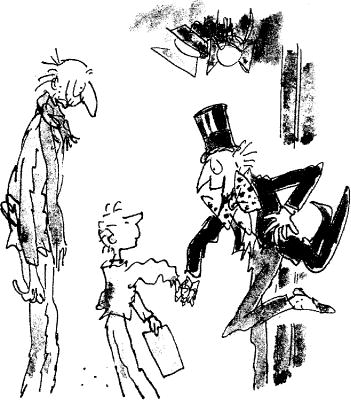

‘Which room shall it be next?’ said Mr Wonka as he turned away and darted into the lift. ‘Come on! Hurry up! We must get going! And how many children are there left now?’
Little Charlie looked at Grandpa Joe, and Grandpa Joe looked back at little Charlie.
‘But Mr Wonka,’ Grandpa Joe called after him, ‘there’s… there’s only Charlie left now.’
Mr Wonka swung round and stared at Charlie.
There was a silence. Charlie stood there holding tightly on to Grandpa Joe’s hand.
‘You mean you’re the only one left?’ Mr Wonka said, pretending to be surprised.
‘Why, yes,’ whispered Charlie. ‘Yes.’
Mr Wonka suddenly exploded with excitement. ‘But my dear boy,’ he cried out, ‘that means you’ve won!’ He rushed out of the lift and started shaking Charlie’s hand so furiously it nearly came off. ‘Oh, I do congratulate you!’ he cried. ‘I really do! I’m absolutely delighted! It couldn’t be better! How wonderful this is! I had a hunch, you knew, right from the beginning, that it was going to be you! Well done, Charlie, well done! This is terrific! Now the fun is really going to start! But we mustn’t dilly! We mustn’t dally! There’s even less time to lose now than there was before! We have an enormous number of things to do before the day is out! Just think of the arrangements that have to be made! And the people we have to fetch! But luckily for us,
we have the great glass lift to speed things up! Jump in, my dear Charlie, jump in! You too, Grandpa Joe, sir! No, no, after you! That’s the way! Now then! This time I shall choose the button we are going to press!’ Mr Wonka’s bright twinkling blue eyes rested for a moment on Charlie’s face.
Something crazy is going to happen now, Charlie thought. But he wasn’t frightened. He wasn’t even nervous. He was just terrifically excited. And so was Grandpa Joe. The old man’s face was shining with excitement as he watched every move that Mr Wonka made. Mr Wonka was reaching for a button high up on the glass ceiling of the lift. Charlie and Grandpa Joe both craned their necks to read what it said on the little label beside the button.
It said… UP AND OUT.
‘Up and out,’ thought Charlie. ‘What sort of a room is that?’
Mr Wonka pressed the button.
The glass doors closed.
‘Hold on!’ cried Mr Wonka.
Then WHAM! The lift shot straight up like a rocket! ‘Yippee!’ shouted Grandpa Joe. Charlie was clinging to Grandpa Joe’s legs and Mr Wonka was holding on to a strap from the ceiling, and up they went, up, up, up, straight up this time, with no twistings or turnings, and Charlie could hear the whistling of the air outside as the lift went faster and faster. ‘Yippee!’ shouted Grandpa Joe again. ‘Yippee! Here we go!’
‘Faster!’ cried Mr Wonka, banging the wall of the lift with his hand. ‘Faster! Faster! If we don’t go any faster than this, we shall never get through!’
‘Through what?’ shouted Grandpa Joe. ‘What have we got to get through?’
‘Ah-ha!’ cried Mr Wonka, ‘you wait and see! I’ve been longing to press this button for years! But I’ve never done it until now! I was tempted many times! Oh, yes, I was tempted! But I couldn’t bear the thought of making a great big hole in the roof of the factory! Here we go, boys! Up and out!’
‘But you don’t mean…’ shouted Grandpa Joe, ‘… you don’t really mean that this lift…’
‘Oh yes, I do!’ answered Mr Wonka. ‘You wait and see! Up and out!’
‘But… but… but… it’s made of glass!’ shouted Grandpa Joe. ‘It’ll break into a million pieces!’
‘I suppose it might,’ said Mr Wonka, cheerful as ever, ‘but it’s pretty thick glass, all the same.’
The lift rushed on, going up and up and up, faster and faster and faster…
Then suddenly, CRASH! – and the most tremendous noise of splintering wood and broken tiles came from directly above their heads, and Grandpa Joe shouted, ‘Help! It’s the end! We’re done for!’ and Mr Wonka said, ‘No, we’re not! We’re through! We’re out!’ Sure enough, the lift had shot right up through the roof of the factory and was now rising into the sky like a rocket, and the sunshine was pouring in through the glass roof. In five seconds they were a thousand feet up in the sky.
‘The lift’s gone mad!’ shouted Grandpa Joe.
‘Have no fear, my dear sir,’ said Mr Wonka calmly, and he pressed another button. The lift stopped. It stopped and hung in mid-air, hovering like a helicopter, hovering over the factory and over the very town itself which lay spread out below them like a picture postcard! Looking down through the glass floor on which he was standing, Charlie could see the small far-away houses and the streets and the snow that lay thickly over everything. It was an eerie and frightening feeling to be standing on clear glass high up in the sky. It made you feel that you weren’t standing on anything at all.
‘Are we all right?’ cried Grandpa Joe. ‘How does this thing stay up?’
‘Sugar power!’ said Mr Wonka. ‘One million sugar power! Oh, look,’ he cried, pointing down, ‘there go the other children! They’re returning home!’